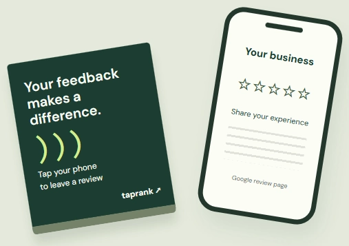

NFC for barbers and salons
One tap for an honest review.
Give every customer a simple way to open your Google review page before they leave your shop.
From £20 · One payment · UK delivery included

From your counter to their review
Offer a tap
Place the card or stand near the till. Invite every customer to share their experience.
Open the link
A compatible phone reads the NFC tag. The customer opens the link to your Google review page.
Let them choose
They can write in their own words, choose a rating or leave without posting.
Products and pricing
What fits your counter?
The £20 adhesive card sits flat near the till. The £25 stand sits upright on a reception desk. Both come set up for your business.
Compare the card and standBefore your first tap
Visit help and privacyIs there a monthly fee?
No. The product, setup and UK delivery are included in the one-time price.
Does TapRank guarantee a higher rating?
No. Each customer chooses whether to review and what to say. TapRank simply opens the review page.